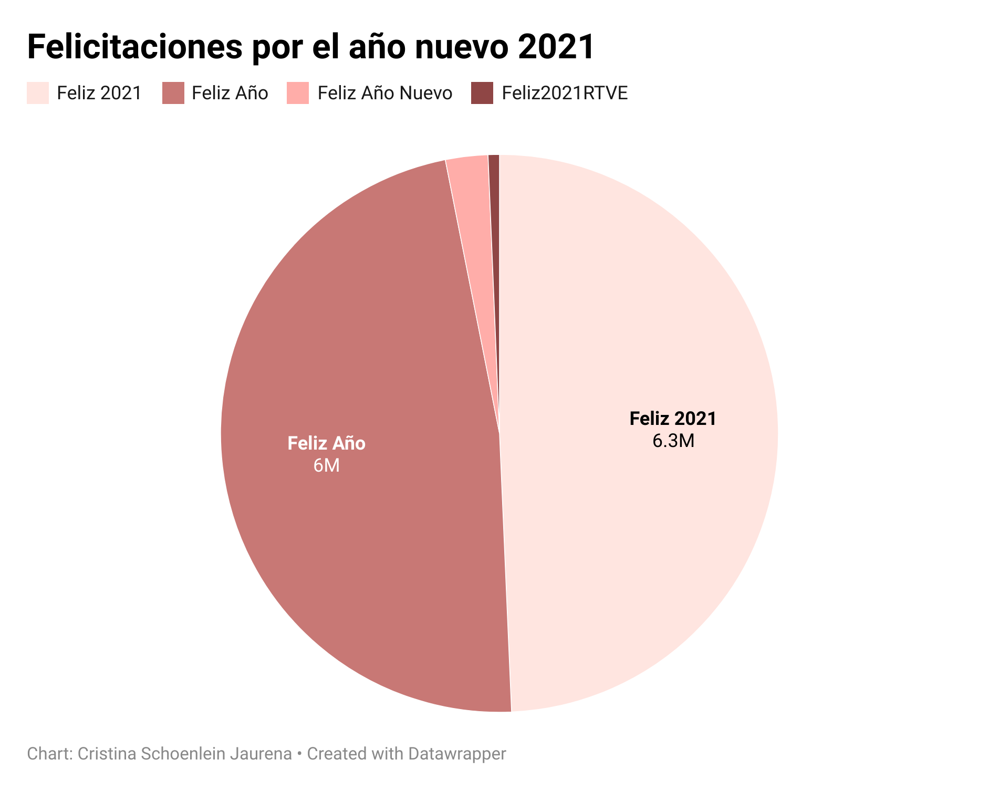
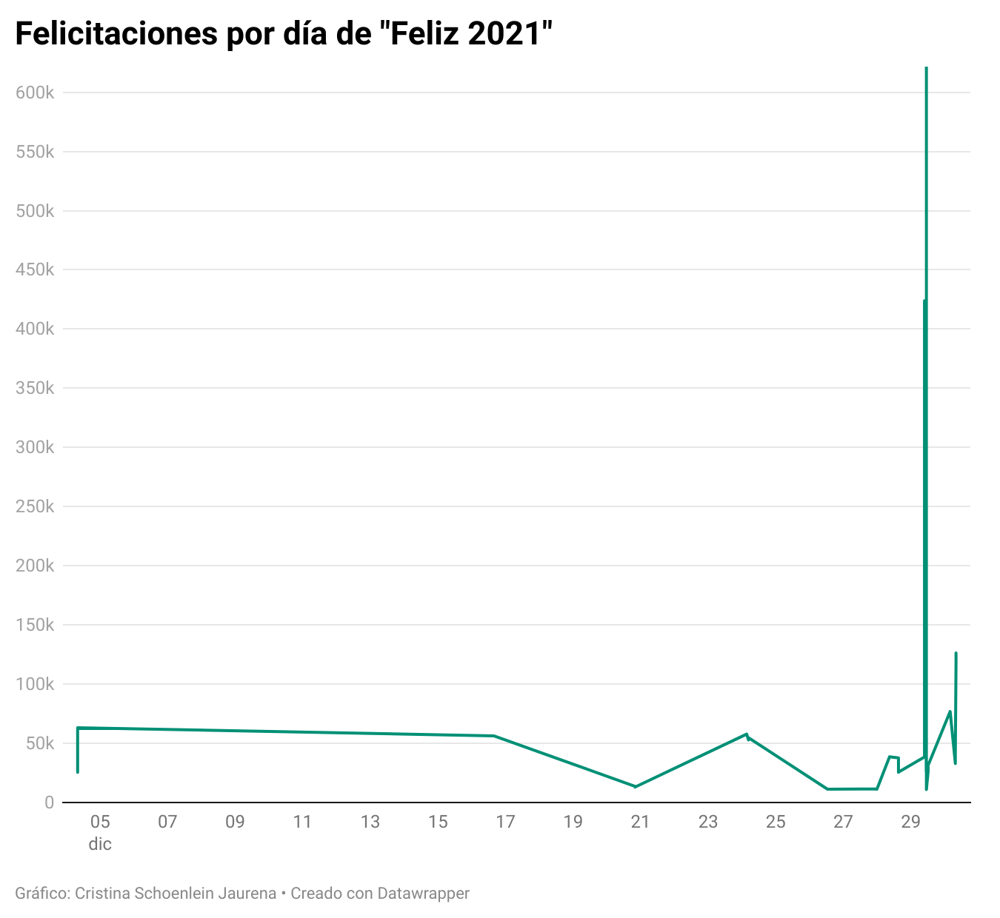

Visualización de datos felicitaciones de Año Nuevo 2020
Justificación de las visualizaciones de datos
La elección de los datos para analizar en la visualización ha estado motivada sobre todo por conocer las tendencias de las felicitaciones de año nuevo de cara a poder compararlas con los datos de este 2021. Me llamaba la atención conocer cuáles son las tendencias en las felicitaciones del año, y en qué momentos la gente felicita el año antes del comienzo, en este caso el 2021.
Me pareció interesante que la mayoría de las felicitaciones son el 29 de diciembre, y que más de 5 millones de tweets se publican ese día solamente con la etiqueta o la tendencia “Feliz Año”. Al analizar los datos, consideré necesario el crear varios gráficos.
El primero de ellos analiza las principales tendencias relacionadas con ese principio del año: son “Feliz Año”, “Feliz 2021”, “Feliz2021RTVE” y “Feliz Año Nuevo”. Observando en este gráfico circular que hay una diferencia sustancial entre las dos principales tendencias “Feliz Año” y “Feliz 2021”, decidí analizar ambas de forma pormenorizada en un gráfico independiente. Quería conocer en ambos casos cuál era el día que más se felicitaba el año antes del comienzo, y qué diferencia había en la felicitación en las vísperas del año, con datos incluso del 4 de diciembre.
Procedimiento
Felicitaciones por el Año Nuevo 2021

Primero se ha hecho “git clone” del repositorio Pontedatos en la terminal
Desde la terminal, se ha accedido a la carpeta src/data para confirmar la localización de feliz mediante el comando “ls”
Se ha abierto open refine en el navegador Safari de MAC para clasificar y limpiar los datos
Se han cargado desde el ordenador los datos del archivo feliz.csv
Se ha configurado el archivo separado por comas (csv), y se han filtrado las columnas: he eliminado la 1 y la 5 porque eran datos que no me interesaban para el gráfico al ser difíciles de representar. A continuación, he modificado la columna 2 para transformar el texto en Fecha (value.toDate) y he cambiado su nombre. También en la fila 6 he cambiado el nombre a “Número”
Como había algunos datos que no concordaban con el estudio indicado (pertenecientes a 1970), los he eliminado usando las Facetas. He añadido en la columna Fecha la faceta “Faceta de línea del tiempo” y he seleccionado esos datos de 1970. He marcado con estrellas esos números y los he eliminado usando el filtro de las celdas marcadas con ese indicador gráfico. En las que se indicaba como “Verdadero”, es decir, que tenían estrella, he decidido “Quitar las filas que encajen (en Editar columnas). He hecho la misma operación para seleccionar los datos de 2020, que son los que me interesan para la visualización, en este caso con la “Faceta de línea del tiempo”.
Con estos datos, he creado una Faceta en la columna 3 “Faceta de texto”, y, mediante un “Filtro de texto”, he hecho una búsqueda para seleccionar la presencia de las felicitaciones del año como tendencia y hashtag.
He editado la Columna 3 para eliminar el Hashtag mediante “Agrupar y editar”, para que tendencias y hashtags se unifiquen. Lo mismo he hecho para agrupar las tendencias y hashtags que se encontraban con y sin espacios. Por ejemplo, he unido “FelizAño2021” con “Feliz Año 2021”
Una vez seleccionados mediante una faceta, he hecho click en “invertir” para seleccionar las celdas que no corresponden a las felicitaciones del año y he eliminado las que no se correspondían con el filtro. En este caso, con las celdas restantes, he filtrado por aquellas que tuvieran en la columna “Número” algún dato, eliminando las celdas que tenían ese dato vacío.
He prescindido también de las columnas de los enlaces y la fecha que no necesitaba en este caso.
A continuación, he exportado el archivo en csv. Una vez hecho esto, he sumado manualmente los datos que concordaban en día, fecha y tendencia para poder realizar el gráfico y que visualmente se entendiera.
Una vez hecho esto, he subido el archivo a Datawrapper y he ido probando los gráficos que más se adecuaban a la información y los datos que quería mostrar. Finalmente he escogido un gráfico circular que representaba los datos de forma accesible. Así se pueden mostrar las tendencias fundamentales en las felicitaciones del año: en este caso las tendencias con mayor frecuencia son las de Feliz Año y Feliz 2021. He cambiado el formato de número, para que aparezca por miles (k) y he modificado el color. He incluido, además, la información de las etiquetas y los valores de cada parte de ese gráfico circular. Para reflejar las tendencias es el gráfico más adecuado porque resume de forma clara los datos de estas felicitaciones.
Por último, he cambiado el título del gráfico, y he escrito mi nombre como autora de la visualización. He exportado el archivo en png con el fondo transparente.
Una vez realizado este gráfico, he decidido realizar dos más que traten al detalle cuándo se han publicado los tweets más repetidos de las felicitaciones del año. Por ello, he creado, en base a este primer gráfico, uno detallado de Feliz 2021 y Feliz Año.
Feliz 2021

Antes que nada, he retrocedido algunos pasos mediante el apartado “rehacer” para llegar hasta donde me interesaba, en este caso, hasta el paso 9. del apartado anterior.
Partiendo de la base del archivo para la primera visualización de datos, he creado una Faceta en la columna 3 “Faceta de texto”, y, mediante un “Filtro de texto”, he hecho una búsqueda para seleccionar la presencia de “Feliz 2021” como tendencia y hashtag.
Una vez seleccionados mediante una faceta, he hecho click en “invertir” para seleccionar las celdas que no corresponden a mi filtro y las he eliminado. Mediante esta selección, solo quedan los datos que interesan para el gráfico.
He utilizado la fecha para ordenar los datos y exportarlos, y también he eliminado la columna de los enlaces porque era innecesaria. En este caso, la columna Fecha es imprescindible.
Una vez hecho esto, he exportado el archivo en csv. Desde ese archivo resultante he agrupado y sumado manualmente los datos. Lo he subido a Datawrapper y he creado el gráfico.
He escogido el gráfico de líneas para observar las oscilaciones en los tweets. He cambiado el formato de presentación de la fecha para que solamente aparezca el día de diciembre al que corresponde, porque todos eran del mismo mes. He modificado el modo de presentación de los datos para que aparezca en miles (k).He cambiado el color, el nombre del gráfico y el autor y lo he descargado como png. con fondo transparente.
Feliz Año
Partiendo de la base del archivo para la primera visualización de datos otra vez, rehaciendo los pasos anteriores de “Feliz 2021”, he creado una Faceta en la columna 3 “Faceta de texto”, y, mediante un “Filtro de texto”, he hecho una búsqueda para seleccionar la presencia de Feliz Año como tendencia y hashtag.
Una vez seleccionados mediante una faceta, he hecho click en “invertir” para eliminar las celdas que no corresponden a mi filtro.
He utilizado la fecha para ordenar los datos y exportarlos, y también he eliminado la columna de los enlaces porque era innecesaria.
Una vez hecho esto, he exportado el archivo en csv. Desde ese archivo resultante he agrupado y sumado manualmente los datos en función de la fecha. Lo he subido a Datawrapper y he creado el gráfico.
Tras probar con diferentes formatos, al final he escogido el gráfico de rango para observar correctamente las tendencias más repetidas por días. He cambiado el formato de presentación de la fecha, en este caso probando con diferentes configuraciones hasta que al final he customizado el formato con MM-DD H:M. He modificado el modo de presentación de los datos para que aparezca en miles (k). Para que se viera con mayor claridad, he utilizado la opción de ordenar con “reverse order” para que el día con Feliz Año más repetido salga en primer lugar, en el gráfico, el correspondiente al 29 de diciembre. He cambiado el color, el nombre del gráfico y el autor y lo he descargado como png. con fondo transparente.
Repositorio de Cristina Schoenlein
Estas son las tareas desarrolladas en Periodismo de Datos durante este curso.¡Espero que os resulten interesantes!